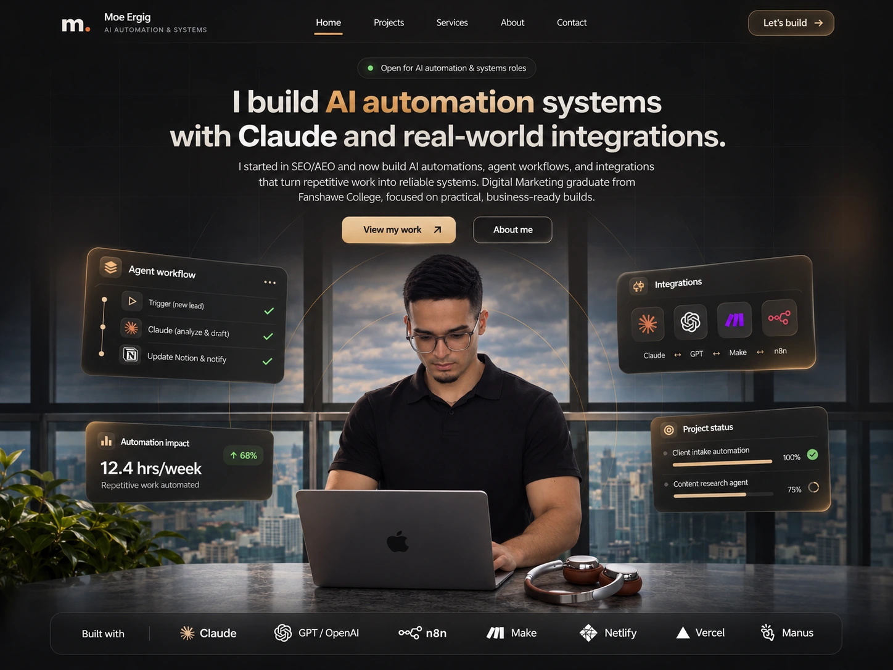

I build AI automation systems with Claude and real-world integrations.
I started in SEO and AEO and now build AI automations, agent workflows, and integrations that turn repetitive work into reliable systems. Digital Marketing graduate from Fanshawe College.
I build AI automation systems with Claude and real-world integrations.
From SEO/AEO to hands-on AI systems: I connect agents, APIs and business tools to make everyday work run better.


Connect the tools. Automate the hand-offs.
ClaudeGPT / OpenAIn8nMake Netlify
Netlify Vercel
Vercel
The workflow panels and performance figures in the hero are illustrative interface examples, not measured client outcomes.
Not another chatbot.
A system that gets things done.
I work at the intersection of software, automation and business operations. That means taking a real workflow, understanding where it breaks, then building the integrations, agent logic and interfaces to make it run.
Custom AI agents
Tools, context, memory, guardrails and human approval—not a chat window with an API key.
↗Systems integration
ERP, POS, CRM, inventory, booking and messaging platforms connected to one workflow.
↗Operations software
Internal portals, approvals, tasks, notifications and the small tools that remove big bottlenecks.
↗Real systems. Real constraints.
Flann.
An AI operator that reads business context, prepares actions and runs workflows across WhatsApp, bookings, teams and customer data—with approvals where they matter.
Explore the build ↗Odoo, POS & business APIs
Secure connectors for sales, orders, inventory and CRM data—with approved write actions.
Client handover portal
One portal to replace documents, checklists and WhatsApp follow-ups.
Explore ↗Brainzyme operations
AI-assisted workflows for research, quality review and content production.
Explore ↗Website-editing agent
Controlled website changes through chat with previews and approvals.
Explore ↗Start with the bottleneck.
Then choose the technology.
The interesting work starts before the prompt. What's the data source? Who needs to approve an action? What happens when an API fails? How will the system behave when a real employee uses it?
More about how I work ↗